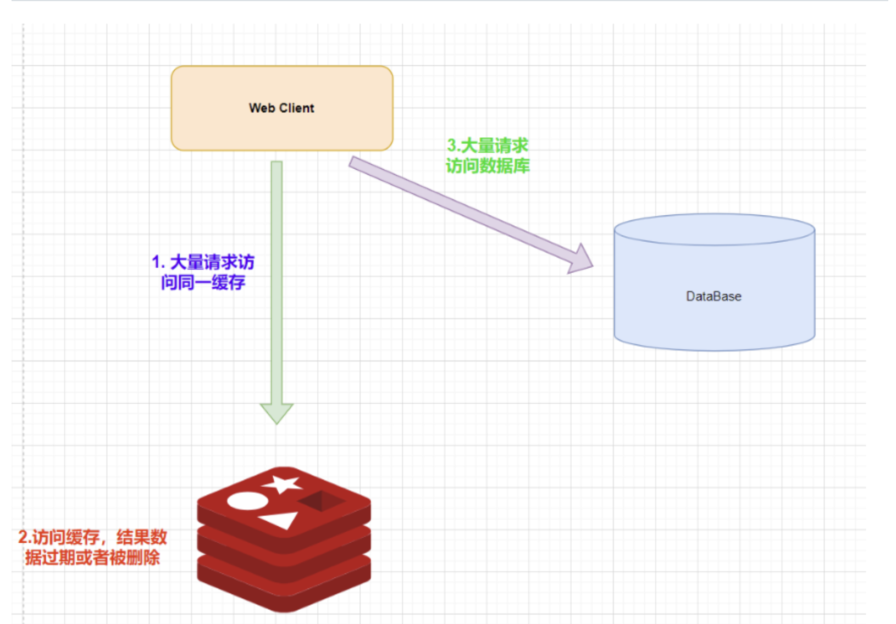
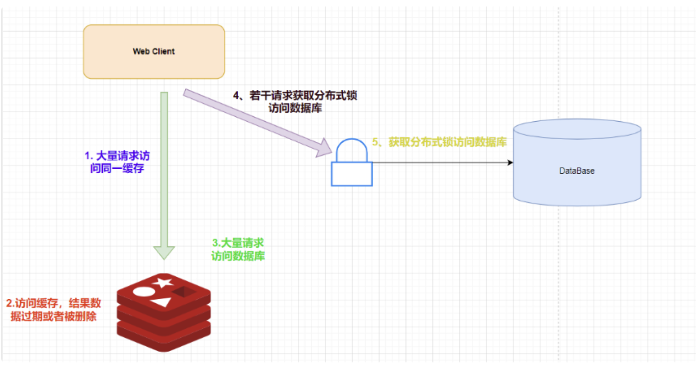
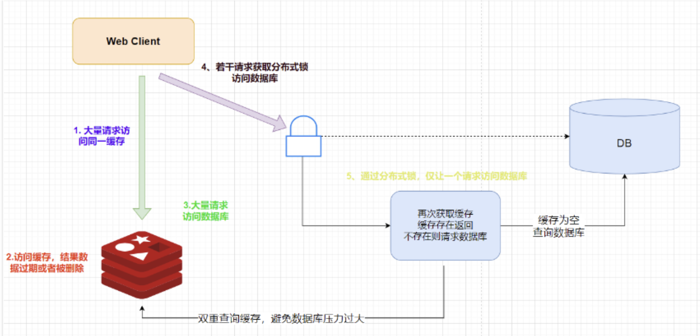

Redis Interview 02
过期键的删除策略
Redis的过期键的删除策略
Redis是一个key-value数据库，我们可以在Redis中设置键的过期时间。Redis的过期策略就是指当前Redis中的缓存key过期了，Redis如何处理。
通常过期策略有以下三种：
- 定时过期：每个设置了过期时间的key都需要创建一个定时器，过到期时间就会立即清除。该策略可以立即清除过期的数据，对内存很友好；但是会占用大量的CPU资源去处理过期的数据，从而影响缓存的相应时间和吞吐量。
- 惰性过期：只有当访问一个key时，才会判断这个key是否过期，过期则立即清除。该策略可以最大化的节省CPU资源，却对内存非常不友好。极端情况下可能出现大量过期的key没有再次被访问，从而不会被删除，占用大量内存。
- 定期过期：每隔一定时间，会扫描一定数量数据库的expires字典中一定数量的key，并清除其中已经过期的key。该策略是前两种的折中策略。通过调整定时扫描的时间间隔和每次扫描的限定耗时，可以在不同情况下使得CPU和内存资源达到最优的平衡效果。
（expires字典会保存所有设置了过期时间的key的过期时间和数据，其中，key是指向键空间中的某个键的指针，value是该键的毫秒精度Unix时间戳表示的过期时间，键空间是指该Redis集群中保存的所有键）
Redis中同时使用了惰性过期和定期过期两种过期方式。
Redis key的过期时间和永久有效分别怎么设置
EXPIRE和PERSIST命令
通过EXPIRE来设置key的过期时间，那么对过期的数据怎么处理
除了缓存服务器自带的缓存失效策略之外（Redis中有6中策略可以选择），还可以根据具体业务自定义的缓存淘汰，常见的策略有两种：
- 定时去清理过期缓存
- 当有用户请求时，再判断这个所用到的缓存是否过期，过期的话就去底层系统得到新数据并更新缓存。
内存相关
MySQL里有2000w数据，redis中只存20w的数据，如何保证redis中的数据都是热点数据
redis内存数据集大小上升到一定大小的时候，就会施行数据淘汰策略
Redis的内存淘汰策略有哪些
Redis的内存淘汰策略是指在Redis的用于缓存的内存不足，怎么处理需要新写入且需要申请额外空间的数据 全局的键空间选择性移除：
- noeviction：当内存不足容纳写入新数据时，新写入操作会报错
- allkeys-lru：当内存不足容纳写入新数据时，在键空间中，移除最近最少使用的key（这个是最常用的）
- allkeys-random：当内存不足容纳写入新数据时，在键空间随机移除某个key 设置过期时间的键空间选择性移除
- volatile-lru：当内存不足容纳写入新数据时，在设置了过期时间的键空间中，移除最近最少使用的key
- volatile-random：当内存不足容纳写入新数据时，在设置了过期时间的键空间中，随机移除某个key
- volatile-ttl：当内存不足容纳写入新数据时，在设置了过期时间的键空间中，有更早过期的key优先移除
Redis如何做内存优化
可以利用Hash，Set，Zset，List等集合类型数据。因为通常情况下很多小的key-value可以用更紧凑的方式放在一起。尽量使用散列表（hash），散列表使用的内存非常小。
线程模型
Redis线程模型
Redis基于Reactor模式开发了网络时间处理器，这个处理器被称为文件时间处理器。它的组成结构为4部分多个套接字，IO多路复用程序，文件事件分派器，事件处理器。因为文件事件分配器队列的消费是单线程的，所以Redis才叫单线程模型。
事务
什么是事务
事务是一个单独的隔离操作，事务中的所有命令都会序列化，按一定顺序执行。事务在执行的过程中，不会被其他客户端发来的命令请求打断。
事务是一个原子操作。事务中的命令要么全部执行要么都不执行。
Redis事务概念
Redis事务的本质是通过MULTI，EXEC，WATCH等一组命令的集合。事务支持一次执行多条指令，一个事务中的所有命令都会被序列化。在事务执行过程中，会按照序列串行化执行队列中的命令，其他客户端的请求不会插入到事务执行命令序列中。
总结：Redis事务就是一次性、顺序性、排他性的执行一个队列里的一系列命令。
Redis事务的三个命令
- 事务开始 MULTI
- 命令入队
- 事务结束 EXEC
Redis保证原子性吗？支持回滚吗？
Redis中单条命令是原子性的，但是事务不保证原子性不支持回滚。事务中的命令只要没有语法错误，事务中的命令都会依次执行。
集群方案
哨兵模式
哨兵主要功能：
- 集群监控：负责监控master和slave是否正常工作。
- 消息通知：如果某个实例有故障，哨兵负责发送消息作为报警通知给管理员
- 故障转移：如果master挂了，会投票选一个slave作为master
- 配置中心：如果故障转移了，通知client客户端新的master地址 哨兵模式用于实现Redis集群的高可用，本身也是分布式的，是以集群运行工作的。
- 故障转移时，判断一个主机是否宕机，需要大部分哨兵同意，这涉及分布式选举。
- 即使部分哨兵失效了，哨兵集群还是能正常工作的。 哨兵的核心知识：
- 哨兵至少要有三个实例来保证健壮性
- 哨兵+redis主从的部署结构，不会保证数据零丢失，只能保证Redis集群的高可用性
缓存异常
缓存雪崩
缓存雪崩是指缓存同一时间大面积失效，所以后面的请求都会落在数据库上，造成数据库短时间内承受大量请求而崩掉。 解决方案
- 缓存数据的过期时间设置随机，防止同一时间大量数据过期现象发生。
- 一般并发量不是特别多的时候，使用最多的是加锁排队
- 给每个缓存数据添加缓存标记，记录缓存是否失效，如果标记失效，更新缓存。
- 使用多级缓存：本地缓存 + 分布式缓存结合，减少单点故障风险，降低对数据库的直接冲击
- 缓存预热：系统启动时提前加载热点数据，避免冷启动时大量请求直接落库（见下文「缓存预热」小节）
若雪崩由缓存中间件（Redis）故障引起：
- 服务熔断：暂停业务响应，直接返回错误，保护后端系统
- 构建集群：部署 Redis 集群（主从 + 哨兵）保证高可用，降低单点故障概率
缓存穿透
缓存穿透是指缓存和数据库中都没有数据，导致所有的请求都落在数据库上，造成数据短时间承受大量请求而崩掉 解决方案：
- 接口层添加校验，如用户鉴权校验，id作为基础校验，id小于等于0直接拦截
- 封禁非法请求：识别并封禁恶意请求的 IP 与账号，防止攻击者反复构造不存在的 key 打爆数据库
- 从缓存中取不到数据，在数据库中也取不到数据，这时可以将key-value写成key-null，缓存有效时间可以写短一点，（设置太长可能导致正常情况也没法使用）。这样可以防止攻击用户反复使用一个id攻击。
- 采用布隆过滤器，将所有可能存在的数据哈希到一个足够大的bitmap中，一个一定不存在的数据会被这个bitmap拦截掉，从而避免对底层存储系统的查询压力。
缓存击穿
缓存击穿是指缓存中没有但数据库中有的数据（一般是缓存时间过期），这时由于并发用户特别多，同时读缓存没读到数据，又同时去数据库取数据，引起数据库压力瞬间增大，造成过大压力。
和雪崩不同的是：缓存击穿指并发差同一条数据，缓存雪崩是指不同的数据都过期了，很多数据查不到从而查数据库。也可以认为缓存击穿是缓存雪崩的「子集」——雪崩是大量 key 同时失效，击穿是某个热点 key 失效的场景
解决方案：
- 设置热点数据永不过期
- 加互斥锁
实现方案：双重判定锁
从 V1 到 V3 的演进：
V1：基础方案（缓存穿透）
先查缓存，缓存不存在则查数据库，查到的数据写入缓存。在高并发下，热点数据过期会导致大量请求直接打到数据库。
public String queryInfo(String id){
// 1. 从缓存中获取对应的数据
String cacheData = cache.get(id);
// 2.判断获取的数据是否为空
if(cacheData == null){
// 查询缓存数据为空，查询数据库
String dbData = db.queryById(id);
if(dbData != null){
cache.set(id,data);
cacheData = dbData;
}
}
// 返回数据
return cacheData;
}
V2：加分布式锁
在查数据库之前先获取分布式锁，保证同一时间只有一个请求能查数据库，其他请求等待。可以有效避免缓存击穿，但存在弊端——拿到锁的每个请求都会查一次数据库，只有第一次有效，造成性能浪费。
public String queryInfo(String id){
// 1. 从缓存中获取对应的数据
String cacheData = cache.get(id);
// 2.判断获取的数据是否为空
if(cacheData == null){
// 查询缓存数据为空，查询数据库
Lock lock = getLock(id);
lock.lock();
try{
String dbData = db.queryById(id);
if(dbData != null){
cache.set(id,data);
cacheData = dbData;
}
}finally{
lock.unlock();
}
}
// 返回数据
return cacheData;
}
V3：双重判定锁（Double-Check Locking）
在 V2 的基础上，获取锁后再次查询缓存。如果缓存中已有数据（可能是第一个线程写入了），直接返回，不再查数据库。只有确认缓存仍然为空时才查数据库。
public String queryInfo(String id){
// 1. 从缓存中获取对应的数据
String cacheData = cache.get(id);
// 2.判断获取的数据是否为空
if(cacheData == null){
// 查询缓存数据为空，查询数据库
Lock lock = getLock(id);
lock.lock();
try{
// 进行缓存数据的二次判断
cacheData = cache.get(id);
if(cacheData == null){
// 缓存数据为空
String dbData = db.queryById(id);
if(dbData != null){
cache.set(id,data);
cacheData = dbData;
}
}
}finally{
lock.unlock();
}
}
// 返回数据
return cacheData;
}
双重判定锁的核心步骤：
- 获取锁：先尝试获取分布式锁，只有一个线程能成功获取锁，其他线程等待。
- 二次判断：获取锁后再次查询缓存，避免拿到锁的每个线程都去查数据库。
- 查询数据库：确认缓存为空后，执行数据库查询获取数据。
- 写入缓存：将数据写入缓存并设置合适的过期时间。
- 释放锁：释放分布式锁，让其他等待的线程继续使用。
缓存预热
缓存预热就是指系统上线后，将相关的缓存数据直接加载到缓存系统。这样就可以避免在用户请求的时候，先查询数据库，然后再将数据缓存的问题，用户直接查询事先被预热的缓存数据 解决方案：
- 直接写个缓存刷新页面，上线时手工操作一下
- 数据量不大，可以在项目启动的时候自动进行加载
- 自动刷新缓存
缓存降级
当访问量剧增，服务出现问题（如响应时间慢或不响应）或非核心服务影响到核心流程的性能时，仍然要保证服务还是可用的，即使是有损服务，系统可以根据一些关键数据进行自动降级，也可以配置开关实现人工降级
缓存降级的最终目标是保证核心服务可用，即使是有损的，而且有些服务是无法降级的（如加入购物车，结算）
在进行降级之前要对系统进行梳理，看看系统是不是可以弃车保帅；从而梳理出哪些必须誓死保护，哪些可以降级，比如可以参考日志级别设置预案
- 一般：比如有些服务偶尔因为网络抖动或者服务正在上线而超时，可以自动降级
- 警告：有些服务在一段时间内成功率有波动（如在95%~100%之间），可以自动降级或人工降级，并发送警告
- 错误：比如可用率低于90%，或者数据库连接池被打爆了，或者访问量忽然间猛增到系统能承受的最大阈值，此时可以根据情况自动降级或人工降级
- 严重错误：比如因为特殊原因数据错误，此时需要紧急人工降级 服务降级的目的，是为了防止Redis服务故障，导致数据库跟着一起发生雪崩问题。因此对于不重要的缓存数据，可以采取服务降级策略，例如一个比较常见的做法就是，Redis出现问题，不去数据库查询，而是直接返回默认值给用户。
热点数据和冷数据
热点数据，缓存才有价值
对于冷数据而言，大部分数据可能还没有再次访问就已经被挤出内存，不仅占用内存，而且价值不大。频繁修改的数据，看情况考虑使用缓存
对于热点数据，缓存以后可能读取数十万次或百万次
缓存数据更新前至少读取两次，缓存才有意义。这个是最基本的策略，如果缓存还没有其作用就失效了，那就太没有价值了。
那存不存在，修改频率很高，但是又不得不考虑缓存的场景？存在，如这个读取接口对数据库压力很大，这些请求发现缓存过期一般都会从后端DB加载数据并回设到缓存，这个时候大并发的请求可能会瞬间把后端DB压垮
缓存热点key
缓存中的一个Key（比如一个促销商品），在某个时间点过期的时候，恰好在这个时间点对这个Key有大量的并发请求发送过来，这些请求发现缓存过期，一般都会从后端DB加载数据并回设到缓存，这个时候大并发的请求可能会瞬间把后端DB压垮
解决方案：
- 对缓存查询加锁，如果key不存在，就加锁，然后查DB入缓存，然后解锁。其他进程如果发现有锁就等待，然后等解锁后返回锁具或者进入DB查询